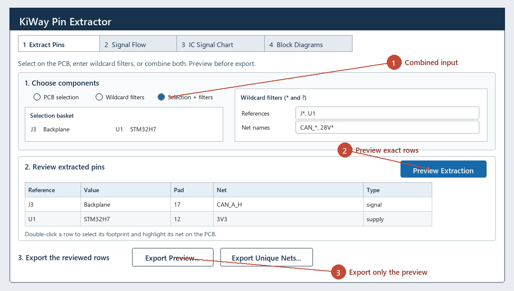

The numbered cues below match the visible workflow in the plugin. A preview is the review evidence; committing or exporting is the final step.

Turn a KiCad PCB and optional XML netlists into reviewable interface tables, test-point traces, TM/TC registers, cross-project link trackers, harness diagrams, and controlled documentation.
DEMO_CTRL,DEMO_SENSOR,DEMO_POWER,DEMO_IO, then click Analyze.KiCad XML sheetpath values retain the full hierarchy. In Sheet Definitions, enter one rule per line:
Display Name | /hierarchical/path/* | reference wildcard Channel 1 Power | /Power/Channel1/* | * Control MCU | * | U1 Connector Sheets | /Interfaces/* | J*
Rules are evaluated top to bottom. Both path and reference filters must match; use * when either filter should not constrain a rule. Validate Rules before publishing an ICD.
| Rule | Example | Meaning |
|---|---|---|
| Wildcard | Board prefixes | wildcard | DEMO_CTRL_* | DEMO_SENSOR_* | The captured signal suffix must agree. |
| Regex | Harness || regex || ^SRC_(?P<signal>.+)$ || ^DST_(?P<signal>.+)$ | Named capture groups must agree. Use || when a regex contains |. |
| Power | --include-power | Enable only when common rails should be linked; disabled by default to avoid many-to-many noise. |
DEMO_CTRL_DEMO_SENSOR_SIGNAL_SPI1_CLK_1_TD resolves to source DEMO_CTRL, destination DEMO_SENSOR, signal SPI1_CLK_1, and telemetry digital TD. Supported tokens: TM, TC, TA, TD, CA, and CD.
The kiway command runs outside KiCad for repeatable CI and batch documentation. Run kiway --help or kiway <command> --help for every option.
kiway inspect design.xml --format json kiway extract design.xml --output icd.md --format markdown kiway crosslink board-a.csv board-b.md --rules rules.txt --format json kiway validate design.xml --aliases sheets.txt --diagnostics json kiway report design.xml --format html --output report.html kiway benchmark --nets 2000 --iterations 5 kiway test
| Command | Use |
|---|---|
inspect | Parse a project/netlist and emit a deterministic summary. |
extract | Extract pins, connectors, test points, TM/TC, and sheet metadata. |
crosslink | Match imported projects with exact, normalized, wildcard, or regex rules. |
validate | Return machine-readable diagnostics; exit code 3 means validation findings. |
report | Generate Markdown, HTML, CSV, JSON, or SVG artifacts. |
benchmark | Run deterministic synthetic scaling checks. |
test | Run the KiWay unit-test suite. |
Commands support deterministic JSON and --config config.json. Exit codes: 0 success, 1 operational error, 2 usage/input error, 3 validation failed.
| Symptom | Resolution |
|---|---|
| Only Root sheet appears | Export a KiCad XML netlist from Schematic Editor and select its directory. PCB data alone does not carry hierarchy. |
| Alias does not apply | Validate Rules, check slash direction, and confirm both path and reference patterns match. |
| Too many links | Disable power matching and narrow wildcard/regex rules. Resolve each ambiguous row before release. |
| No cross-selection | Save/reload after a major PCB update. Select a concrete Board Pins or Component Export row, not an imported-document row. |
| Graph import error | Install networkx in the Python environment executing the CLI or KiCad plugin. |